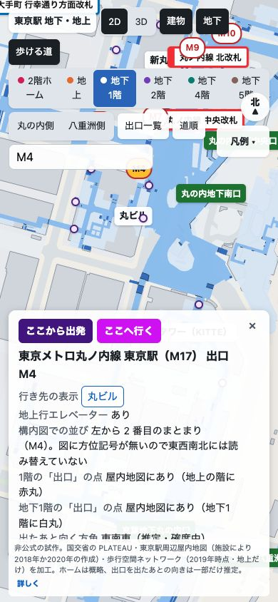
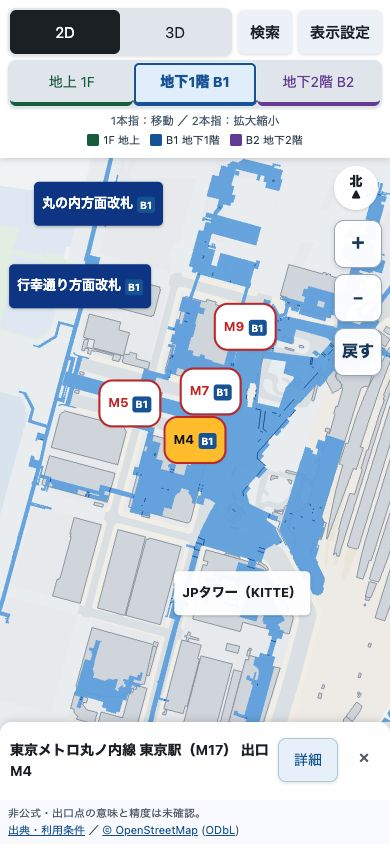
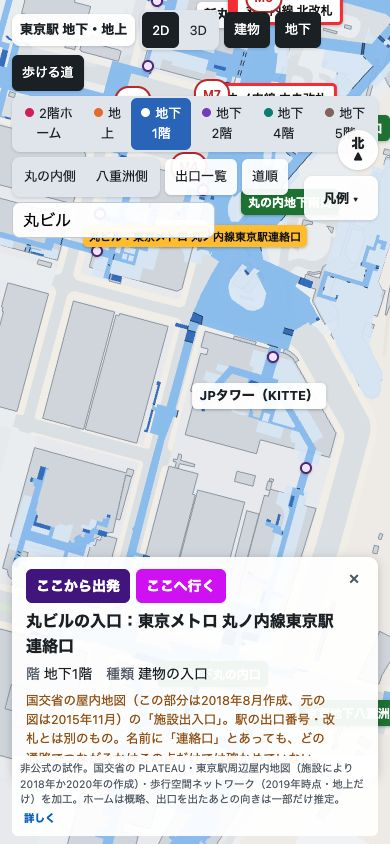
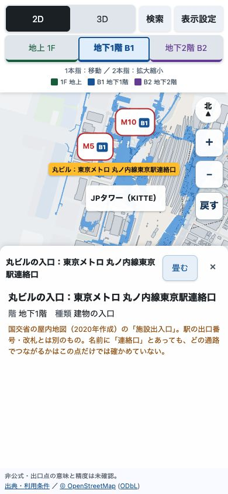
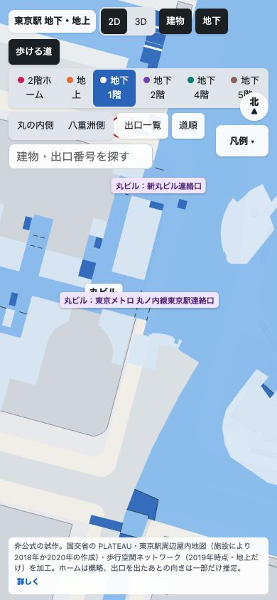
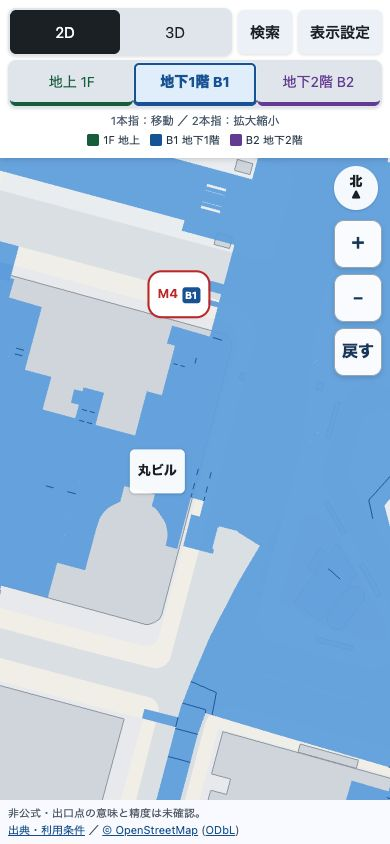
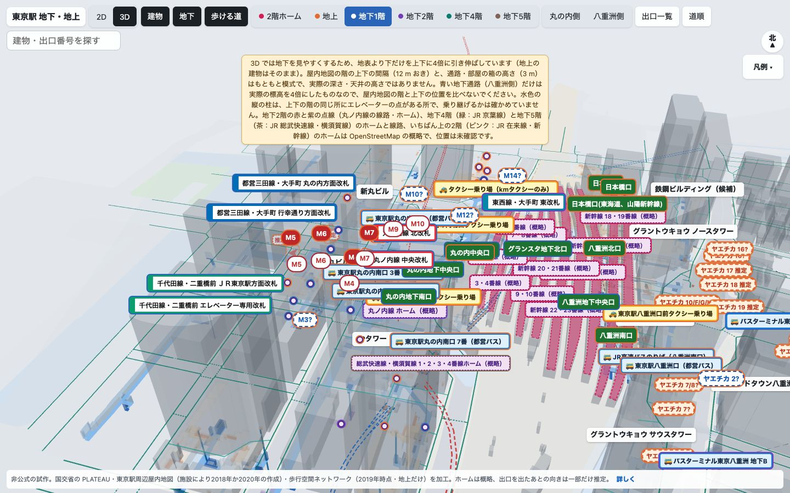
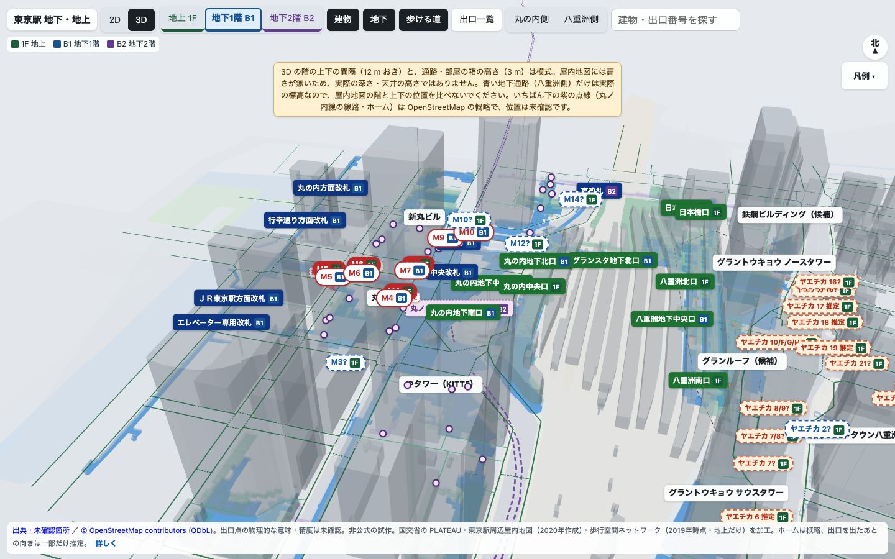

情報の説明はClaude版、
スマホ画面と入力試験はCodex版が上
結論：地図情報を育てる土台にはClaude現行版を推奨します。資料の時点と路線・駅の説明がより正確です。スマホ向けの画面と、同じ入力を渡した操作試験ではCodex公開第7版が優位でした。
要判断：今すぐ決めることはありません。統合案は提案であり、地図の修正・取り込みはしていません。
詳細：同じ画面幅・場所・入力で比較した結果と、両版の弱点を以下に示します。
位置精度は勝敗を付けられません。主要な建物・通路・出口の座標は共通です。両版とも、現在の駅への一致、出口点が階段のどこを指すか、地下の実際の深さを確認し切れていません。
音声付きの比較
VOICEVOX:ずんだもん（ノーマル）／日本語字幕付き。画面はMacのブラウザで撮影。指操作の数値はプログラムで同じ入力を渡した試験であり、iPhone実機の測定ではありません。
どの版を比べたか
共通フォルダの現行試作
10月29日18時47分（日本時間）の状態を保存。丸ノ内線・JR周辺に加え、2階・地下4階・地下5階の概略ホーム、バス・タクシー、道順が追加されています。
公開第7版
3階層を中心に、スマホの画面整理・2本指回転・ピンチの修正を重ねた版。Claude版の初期実装と主要な地理データを引き継いでいます。
本人がこの2版を比較対象に指定しました。完全に独立した制作ではなく、依頼された追加機能や更新時点にも差があります。この結果を、ClaudeとCodexというモデル全般の能力差へ広げることはできません。
項目ごとの判定
同等・実精度は未確認
建物、地上の面、地上の経路、出口などを記録した4種類のデータは、ファイルの内容がすべて一致しました。屋内地図の階ごとの形も全内容が同じです。表示が違って見えても、一方の座標がより正確になったわけではありません。
Claude版が上
施設ごとに資料の年月を表示し、二重橋前・大手町などの改札に路線・駅名を添えます。Codex版は一部の札で路線名が省かれ、資料を一括して2020年作成とする古い説明が残っています。
Claude版が広い
追加ホーム・交通乗り場・道順があります。ただし、原資料で位置や接続が確かめられない部分を「概略」「目安」として追加したものです。機能が多いことを、地図が正確である根拠にはしません。
Codex版が上
検索と設定を格納し、選択直後のカードを小さく表示。重なる札を抑えます。Claude版では検索結果にカードが重なり、入口を選べない場面も確認しました。
Codex版が上
同じ入力で、ピンチ後の残った指の移動と、2本指をひねる回転が機能しました。Claude版では残った指が動かず、純粋なひねりが方位回転になりませんでした。Safari実機の操作感は両方とも未確認です。
Codex版が軽くする設計
必要なときに描画し、同色の箱をまとめています。Claude版は静止中も描画を続けます。iPhoneの速さ・発熱・電池消費を測った結果ではありません。
選んだ後も地図を見やすいのはCodex版
同じスマホ相当の画面で、M4を検索して選択。どちらも出口・B1・中心・縮尺を2D→3D→2Dで保持しました。


カードの状態は各版の初期動作です。同じ量の説明を表示した比較ではなく、選択直後の使い勝手の比較です。
資料の年月はClaude版が正しい
同じ丸ビルの「東京メトロ 丸ノ内線東京駅連絡口」を検索して選びました。原資料は2018年8月作成、元の図は2015年11月。Claude版はこの年月を表示します。Codex版の2020年作成という表示は、この入口については修正が必要です。


配布された圧縮ファイルの付随情報と加工データも別担当が照合。46組の件数が一致し、JRの高さを表す値2,808個はすべて0でした。取り込めたことは確認できますが、0を本当の標高と扱うことはできません。両版の屋内3Dは模式です。
同じ指の動きを渡した結果
実際の制御プログラムへ、同じ座標列を渡して比較しました。地図面の大きさをそろえ、3Dは55度の傾きから開始。表の値は読みやすい桁へ丸めています。
| 試した動き | Claude版 | Codex版 |
|---|---|---|
| ピンチ後、1本残して移動 | 移動しない 2D・3Dとも | 移動を継続 |
| 3Dで2本指を30度ひねる | 方位変化0度 | 方位変化30度 |
| 3Dで指を下へ引く | 地面の点は指の移動距離の約6割だけ動く | 地面の点は指と同じ距離だけ動く |
| 3Dで指の間隔を広げる | 中心がわずかにずれる | 中心を維持 |
2Dの通常の1本指移動と中央ピンチは両方とも正しく反応しました。残した指が止まることはClaude版の2Dでも再現。実機の指、Safariが指の動きをプログラムに渡す処理、画面全体の拡大との干渉は、この試験では再現していません。
Codex版も入口を隠しすぎる
同じ場所を表示高200mまで拡大し、何も選んでいない状態で確認。Claude版では入口ラベルが2つ表示され、Codex版は0でした。Codex版は未選択の入口・階段のラベルを、拡大しても非表示にする作りです。検索から選べますが、地図を眺めながら入口を探す用途では不利です。


道順の追加は「通れる証明」と分ける
Claude版の経路は、区画が隣接する・上下で重なることから作った推定を含みます。829地点・1,244接続のうち、上下接続は197です。通行の可否、改札の内外、利用時間まで確かめた網ではありません。
「新幹線から千代田線」の手順では、公式図で確認した説明と、未確認の地下移動を分けて表示しています。この区別は適切です。一方、「確かめた道順」という入口から未確認の点線も表示されるため、全区間が確認済みと受け取られる余地があります。ホーム間や新しいバスターミナルへの点線も、実際の通路とは限りません。
Codex版にはこの追加機能がありません。元の依頼で最短経路は初版の必須条件ではないため、機能がないだけで減点しません。両版とも、地上への出入口の位置、地下通路のつながり、出口を出た後の向きが実際の駅と合うか、確認が必要です。
採る部分と直す部分
地図情報の土台：Claude版の施設ごとの年月、路線・駅名、追加情報の出典を採る。
iPhoneの操作：Codex版の2本指の扱い、カードの開閉、画面の整理、必要時の描画を採る。
統合前に直す：Claude版の指を1本残したときの停止・ひねり回転・検索結果の重なり。Codex版の資料時点と入口ラベルの非表示。
統合とは別に、実際の駅や端末で確かめること：出口点の物理的な意味、現在の通行可能な接続、実機Safariのピンチ。見た目の統合だけで解決済みにしない。
これは比較からの提案です。どちらの地図も修正・統合・新規公開していません。
検証方法と限界
- 日本時間2026年10月29日18時47分に作業中のClaude版を保存。保存前後でファイルが変わらないことを確認。Codex版は公開第7版に固定。
- Macブラウザで390×844、320×568、1440×900を確認。小さい画面でも、内容が横にはみ出さないことを確認しました。M4検索と表示切替、同じ建物入口、拡大時のラベルを実画面で比較。今回の2つの検証タブにページエラーなし。
- Claude版のデータ等の既存31テスト、Codex版の入力等44テストを実行し合格。試験の目的が違うため、件数を比べて品質の点数にはしない。
- 交通・地図の検証担当と、入力・描画の反証担当が別々に調査。主担当もデータ差分と同じ入力列を再実行。複数AIの賛成は現地の正確性の証明にしない。
- 現地確認、測量点による位置精度の比較、実機iPhone・iPadの指操作、画面更新の速さ・電力・発熱の測定、全駅・全経路の点検は未実施。
- 両版が同じ基礎データを使うため、今回の比較は各版の品質比較であり、モデル一般の順位付けではない。
デスクトップの同条件画面


どちらも地上建物は半透明で、表示を消すこともできます。実際の深さの比較には使えません。
原資料と共有する記録
国交省の屋内地図案内、PLATEAU先行実証、JR東日本 東京駅構内図、東京メトロ 東京駅構内図、大手町駅構内図を2026年10月29日に参照。原ファイルの照合は、本人が保存済みの屋内地図の圧縮ファイルを使用しました。
地図画面は国交省のPLATEAU・東京駅周辺屋内地図・歩行空間ネットワークを加工。© OpenStreetMap contributors ／ OpenStreetMapの利用条件。駅・施設の公式サービスではありません。
同じ保存版、ファイルの照合結果、検証コード、入力結果、原資料の検算、画面、動画原本は共通リポジトリに保存。未公開のアプリ本体や作業ファイルは、この報告には掲載していません。